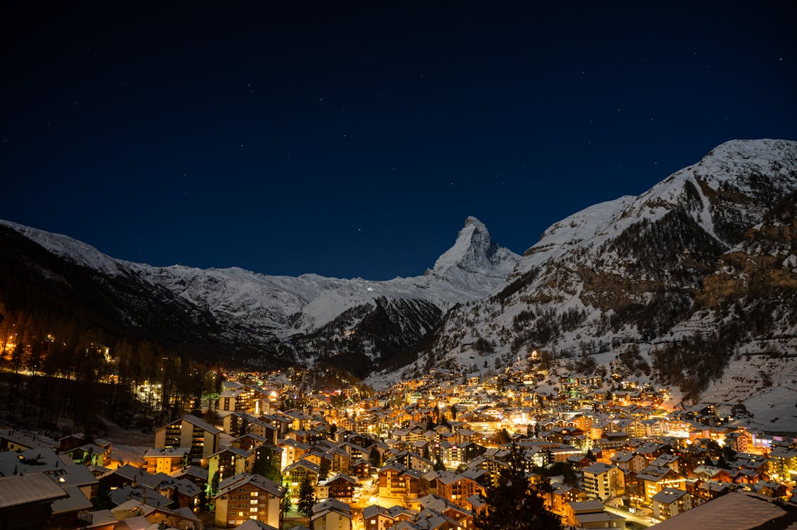
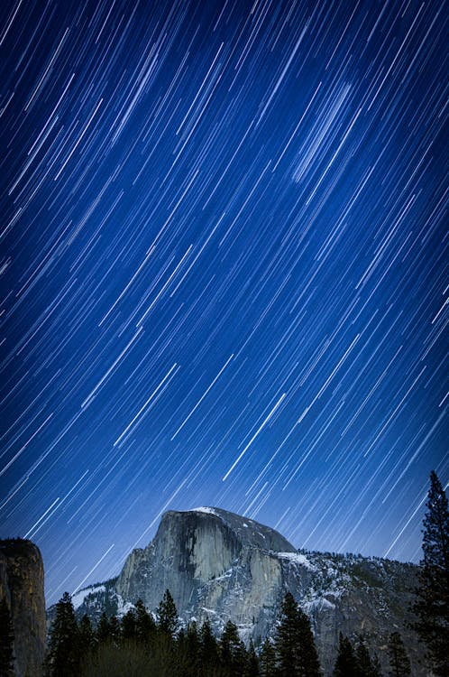
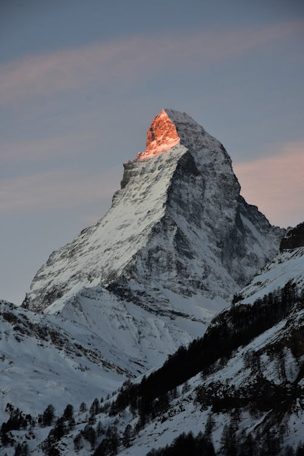
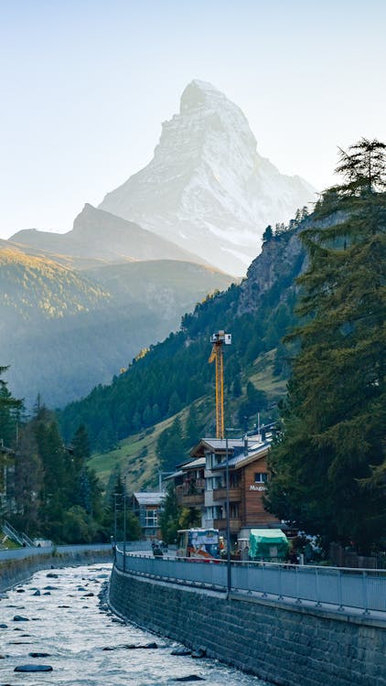

My Favorite City
VELARIS
Welcome to Velaris, Night Court, Prythian

On the western side of the Night Court of Prythian lies a hidden city called Velaris, sometimes referred
to as the Court of Dreams or the City of Starlight. Velaris is shaped like a crust on top of steep,
undulating hills. The Sidra River, a wide, meandering river the color of the deepest sapphire, runs
alongside the hills and empties into the ocean. The Sidra River is navigable thanks to the permanent
placement of ships with sails of various shapes along its course. Like eternal guardians of the city, a
wall of red stone mountains with flat tops curved to the northern edge of Velaris, where the river bent
toward them and flowed into their shadows. In fact, the House of Wind, Rhysand's official residence, is
located in the uppermost portion of their middle and larger peak, which is punctuated by holes and
windows. To the north, a variety of mountains encircle the city on the other side of the river. These
mountains are a collection of jagged peaks that resemble fish teeth and pierce the city's hills from the
sea. White marble, warm sandstone, and the same red stone of the flat-topped mountains on the city's
northern edge are used to construct the city's buildings. Townhouses with white chimneys and green
copper roofs abound in many of Velaris' neighborhoods. Velaris is home to nightclubs like the Rita's,
restaurants like the Restaurant where the Inner Circle eats, and numerous stores with delicate tables
and chairs strewn outside their cheery fronts. Warming spells are used to heat many of these structures.
Recommended Places to Go
-
Starfall:
https://acourtofthornsandroses.fandom.com/wiki/Starfall
-
Ramiel:
https://acourtofthornsandroses.fandom.com/wiki/Ramiel?so=search
-
Sidra River:
https://acourtofthornsandroses.fandom.com/wiki/Sidra_River?so=search
-
Rita's Tavern:
https://acourtofthornsandroses.fandom.com/wiki/Rita's?so=search

Starfall
Even though the views are amazing during the day, the best time to visit the Starfall viewpoint is at
sunset, when the sky begins to change color over the mountains. It will change from blue to orange, red,
pink, and, if the night is clear, the most beautiful shade of purple. Don't leave just yet after the sun
sets; wait until it gets dark, when Starfall begins. At this point, the village's chalets will all turn
on their lights, causing the valley below to sparkle. You might even catch a glimpse of stars above.
With all the snow on the rooftops and the views of Ramiel in the background, it appears completely
magical in the winter! Starfall initially appears to be a shower of shooting stars in the sky, just as
its name suggests. But in reality, they are spirits. It happens around the Spring Equinox, which is
around March 25th in our world, starfall occurs.

Ramiel
Located in the Night Court's central Illyria region, Ramiel is considered the court's sacred mountain.
The mountain with three stars on top, which is only visible for one week out of the year during the
Blood Rite, was made Ramiel's court insignia by the first Night Court ruler. To participate in the
ritual, Illyrian warriors must ascend Ramiel and touch the onyx monolith there. They are not regarded as
warriors if they fail the ceremony.

Sidra River
The Sidra River, or just the Sidra, is a wide, meandering river that flows through Velaris and empties
into the city's sea gulf. It sparkles like the deepest sapphire. The Sidra is navigable because ships
with different shaped sails loiter there. There are two palaces on the northern side of the Sidra and
two on the southern side.

Rita's Tavern
Rita's is a Velaris pleasure hall where patrons can gamble and dance. It's a warm, lantern-lit room
filled with animated chatter and glass clinking. After a long day, you would expect to find the Night
Court's elite relaxing there. Try the Sidra Special, which is their signature beverage.
Resources
-
Christian Buergi. Zermatt Matterhorn Viewpoint in Switzerland. 2024.
https://www.pexels.com/photo/zermatt-matterhorn-viewpoint-in-switzerland-6344695/. Accessed 26 October, 2024.
-
Nanda Gopal Lakshman. Matterhorn from Zermatt. 2024.
https://www.pexels.com/photo/matterhorn-from-zermatt-27436132/. Accessed 26 October, 2024.
-
Pearce, S. (2024, August 7). Is Zermatt Velaris from ACOTAR? Visit a real life city of starlight
(2024)! Third Eye Traveller.
https://thirdeyetraveller.com/zermatt-velaris-acotar-real-life/#:~:text=Visit%20a%20Real%20Life%20City%20of%20Starlight%20%282024%29%21,at%20sunset%20%26%20at%20night%20for%20Starfall%20
-
Pixabay. Brown and Red Billiards Tables With Green Lamps. 2024.
https://www.pexels.com/photo/brown-and-red-billiards-tables-with-green-lamps-261043/. Accessed 26 October, 2024.
-
Robert Hacker. Long Exposure Night Sky. 2024.
https://www.pexels.com/photo/long-exposure-night-sky-14253782/. Accessed 26 October, 2024.
-
Timo Niedermann. Scenic View of Matterhorn, Switzerland. 2024.
https://www.pexels.com/photo/scenic-view-of-matterhorn-switzerland-10570243/. Accessed 26 October, 2024.
-
Wiki, C. T. a. C. O. T. a. R. (n.d.-a). Ramiel. A Court of Thorns and Roses Wiki.
https://acourtofthornsandroses.fandom.com/wiki/Ramiel?so=search
-
Wiki, C. T. a. C. O. T. a. R. (n.d.-b). Rita’s. A Court of Thorns and Roses Wiki.
https://acourtofthornsandroses.fandom.com/wiki/Rita's?so=search
-
Wiki, C. T. a. C. O. T. a. R. (n.d.-b). Sidra River. A Court of Thorns and Roses Wiki.
https://acourtofthornsandroses.fandom.com/wiki/Sidra_River?so=search
-
Wiki, C. T. a. C. O. T. a. R. (n.d.-a). Starfall. A Court of Thorns and Roses Wiki.
https://acourtofthornsandroses.fandom.com/wiki/Starfall
-
Wiki, C. T. a. C. O. T. a. R. (n.d.). Velaris. A Court of Thorns and Roses Wiki.
https://acourtofthornsandroses.fandom.com/wiki/Velaris